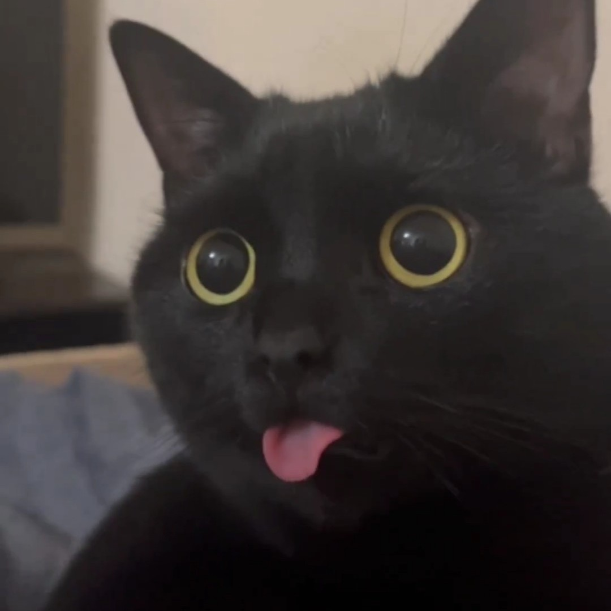

Ameya Gurjar
BlackCat
Hello, I'm Ameya Gurjar, also known as BlackCat, a coding enthusiast from Mumbai, India. I'm an ardent cat lover and a coding enthusiast. On this Github profile, you'll find a fusion of my two passions - cats and code. Join me on this exciting journey as we explore the world of cats who code, creating innovative projects and leaving our unique paw prints on the digital realm. Let's embrace the meow-tastic synergy of cats and coding!